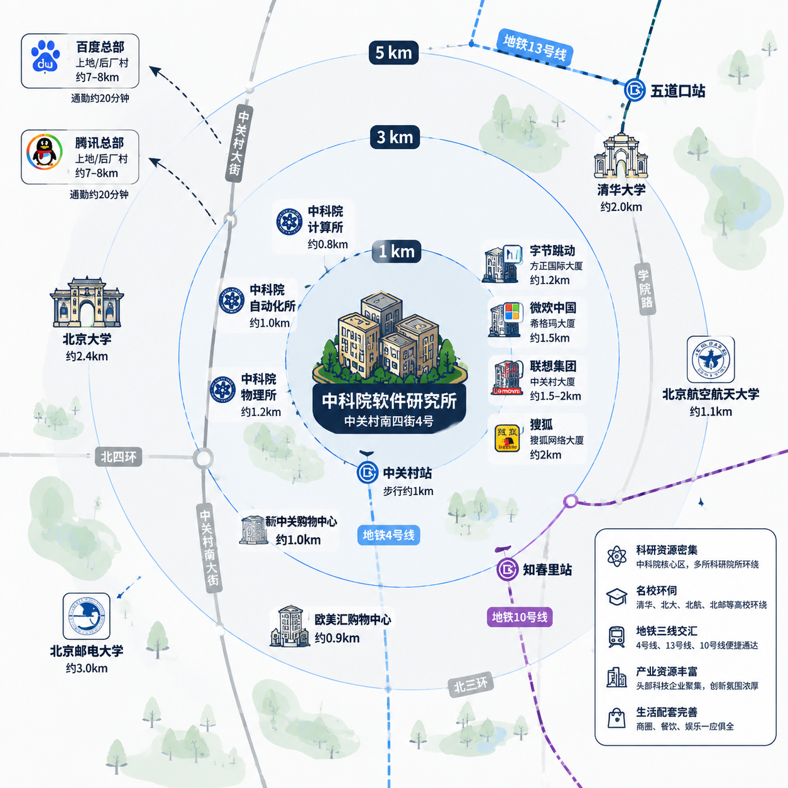
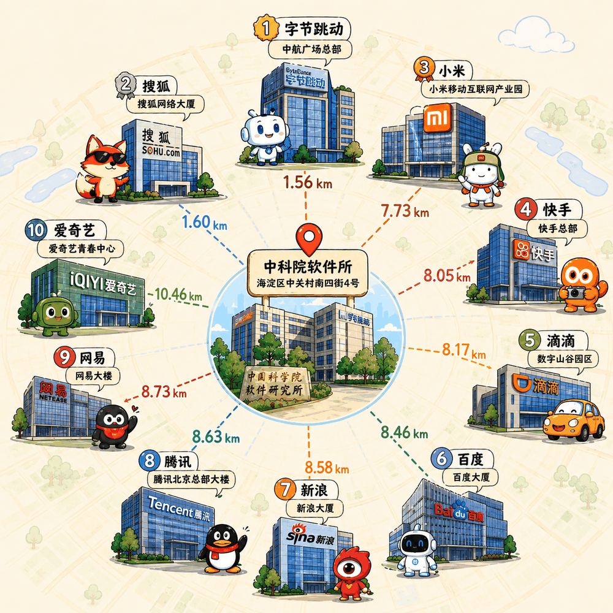
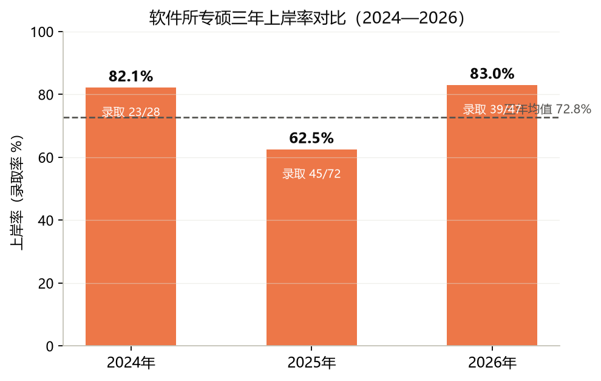
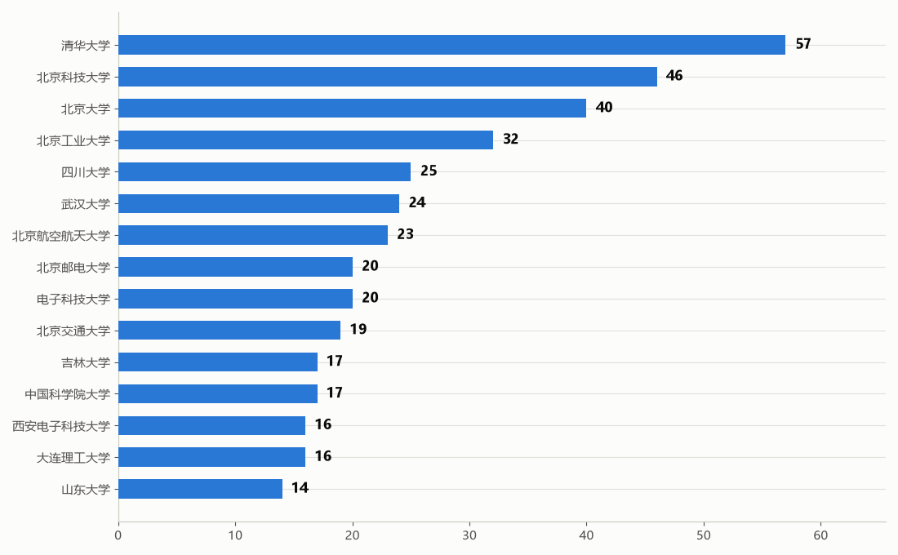

一切献给软件所
中科院软件所 考研报考指南
真实报录数据 · 报考全流程 · 复试潜规则
一手上岸经验，一站讲清
毕业生去向收集
各实验室毕业生去了哪里，整理成一张可核对的去向表。目前为初步占位，欢迎提供线索
中关村的「计算机国家队」
中国科学院软件研究所（ISCAS）成立于 1985 年，地处北京中关村，是一所致力于计算机科学理论与软件高新技术研究的综合性研究所，覆盖计算机、软件工程、AI 大模型、系统软件、数据库、网络安全等领域。

地理位置优越，与互联网大厂为邻
以软件所（海淀区中关村南四街 4 号）为圆心，互联网大厂北京总部 / 主办公区直线距离 Top 10。字节跳动中航广场总部距软件所仅 1.56 km，搜狐网络大厦 1.60 km，前 9 名均在 9 km 内。查看完整数据 →

- 1 字节跳动中航广场总部
- 2 搜狐搜狐网络大厦
- 3 小米小米移动互联网产业园
- 4 快手快手总部
- 5 滴滴数字山谷园区
- 6 百度百度大厦
- 7 新浪新浪大厦
- 8 腾讯腾讯北京总部大楼
- 9 网易网易大楼
- 10 爱奇艺爱奇艺青春中心
招生实验室
为什么选择软件所
可信计算、并行软件、基础软件、人机交互等，国科大计算机学科评估 A+
26 年学硕线 269，仅比国家线高 5 分；同级 985 普遍 340–380+
中科院体系、国家级重点实验室；地处中关村，实习就业资源集中
研一补助 3.3 万+/年（北京），已含学费返还，读研基本自给自足
更看重初试与复试表现，大量双非上岸案例可查
专硕可转学硕；不接受所外调剂，一志愿权益有保障
报考全流程，一篇讲清
从初试备考到复试上岸的完整攻略，点击进入对应内容
近三年上岸率对比
基于 24-26 年专硕复试录取数据，直观对比三年上岸率变化

优质生源，汇聚软件所
2020-2026 年推免拟录取 713 人，覆盖全国 121 所高校；Top 30 生源高校中 985 占 71.4%、985/211 合计占 96.8%

上岸同学的一手经验
来自不同背景上岸同学的真实备考故事，点击卡片查看全文
354 分专硕上岸 · 数学 129 · 详细时间规划
双非 双非一本一战上岸省属重点本科 · 软测国一 · 毕设聚焦软件供应链安全
985 985 跨考软件所学硕自动化跨考学硕 · 6 月启动 · 张宇数学体系 + 408 策略
985 工作两年后上岸英二 70+ 方法论 · 408 性价比做题策略
双非 科班一战上岸ICPC 银牌 · 6 月末启动 · 408 各科针对性策略
双非 双非一战上岸（短篇）2.8 绩点 · seL4 形式化验证毕设 · 复试做依赖类型内核
985 985 科班 400+ 高分上岸机器人方向毕设 · 408 回归真题 · LLM 辅助学习心得
四非 四非 345 顺子一战上岸智软南京学院专硕 · 国奖 + 市长奖学金 · 复试要多准备
985 400+ 高分上岸（Dave）保研边缘选手 · 每天 5h+ · 数二 150
双非 零基础一战上岸（TTao）四级四次才过 · 4 月启动 · 390+ · 坚持就是胜利
四非 四非一本一战上岸2.8 绩点 · 320+ · 两篇北核 + 专利 + 大创 · 科研翻盘
四非 四非科班上岸9 月全力开冲 · 英语 80+ · 六级 620 · 优质资料源
985 985 三无摆子一战上岸360+ 调剂学硕 · 摆烂选手如何上岸软所？
双非 双非一本二战上岸二战低分上岸 · 复试只问项目 · 附专硕调剂学硕解读
分享你的备考故事
经验分享持续征集中，一份投稿可能帮到无数后来者
-
01
提交 Issue
在仓库 Issues 页提出修改建议或补充内容，维护者会及时响应
-
02
提交 Pull Request
Fork 本仓库，按投稿模板写好内容后提交 PR，审核通过即可收录
-
03
联系维护者
不熟悉 GitHub 操作？把内容发给维护者，代为提交与整理
感谢每一位分享者
本指南的诞生离不开以下同学的热心分享与贡献


迪迦 · 佚名同学 · Y 以及所有在备考群、小红书、知乎无私分享的同学——
一个人的经验是有限的，一群人的智慧是无限的。
对软所效忠
已有 0 位同学宣誓效忠软件所
兄弟院校报考指南
中科院体系内兄弟研究所的报考指南站，供择校对比参考
 您是第 0 位宣誓者
您是第 0 位宣誓者